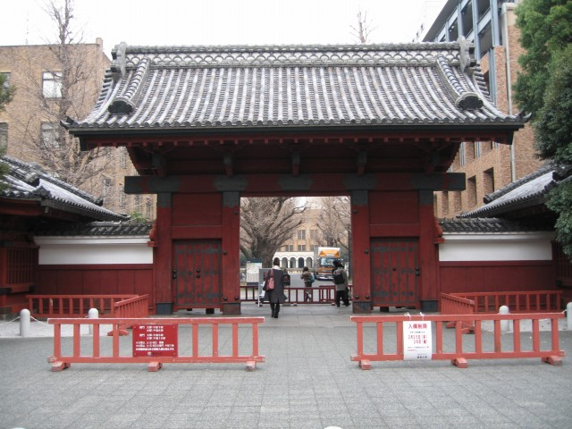
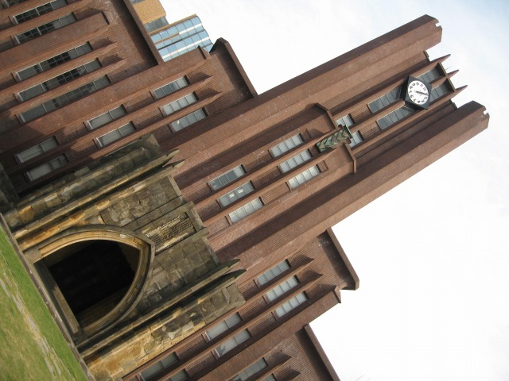
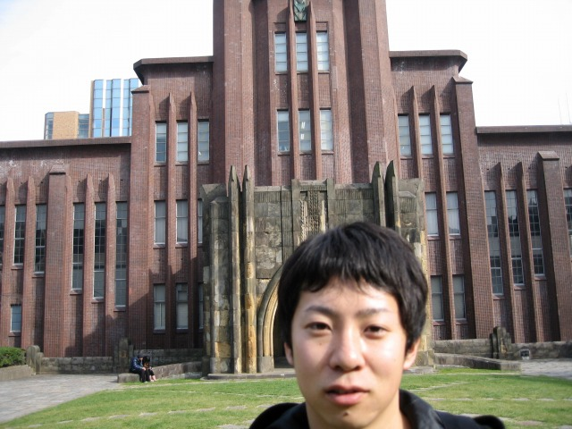
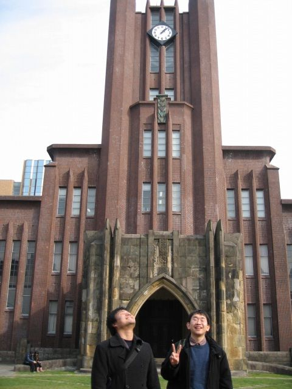
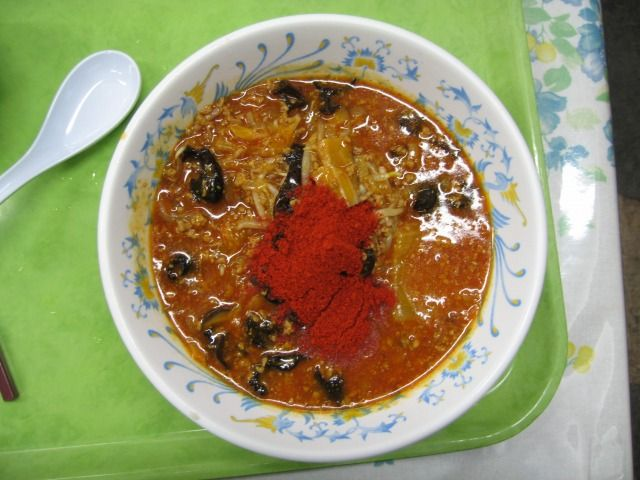
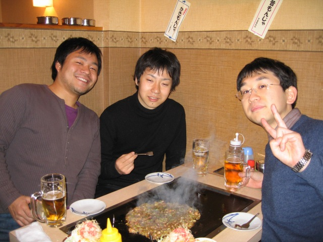
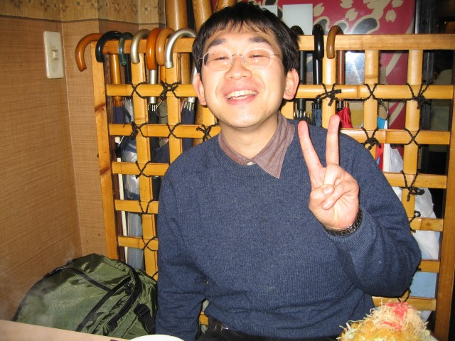

Y名田くん，K野くん，M脇くんが第36回冬期講習会＠東大（本郷）に参加しました．会場の写真が無いやん！ 帰ってから講習会内容のまとめ発表はキチンとありました．ただし，光コムは除く．難しいから．．．ってオイ！
赤門
安田講堂 変わった構図
K野くん＠自分撮りで.ちょっとピンぼけ
ふたりで

ひとりで
赤門ラーメンが名物だそうで＠学食．そんなに辛くないそうです．
もんじゃ焼き．
ここはタッキーが座った席．You!デビューしちゃいなよ！
| ・第36回冬期講習会「光計測と偏光−基礎から最先端の応用まで」(H22.01.21-22) | |||
Y名田くん，K野くん，M脇くんが第36回冬期講習会＠東大（本郷）に参加しました．会場の写真が無いやん！ 帰ってから講習会内容のまとめ発表はキチンとありました．ただし，光コムは除く．難しいから．．．ってオイ！ |
|||
|

赤門 |

安田講堂 変わった構図 | ||
|

K野くん＠自分撮りで.ちょっとピンぼけ |

ふたりで | ||
|
ひとりで |

赤門ラーメンが名物だそうで＠学食．そんなに辛くないそうです． | ||
|

もんじゃ焼き． |

ここはタッキーが座った席．You!デビューしちゃいなよ！ | ||